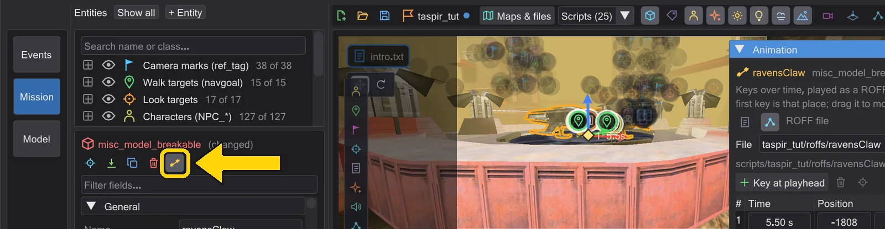
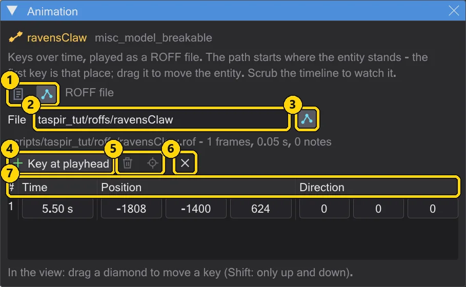
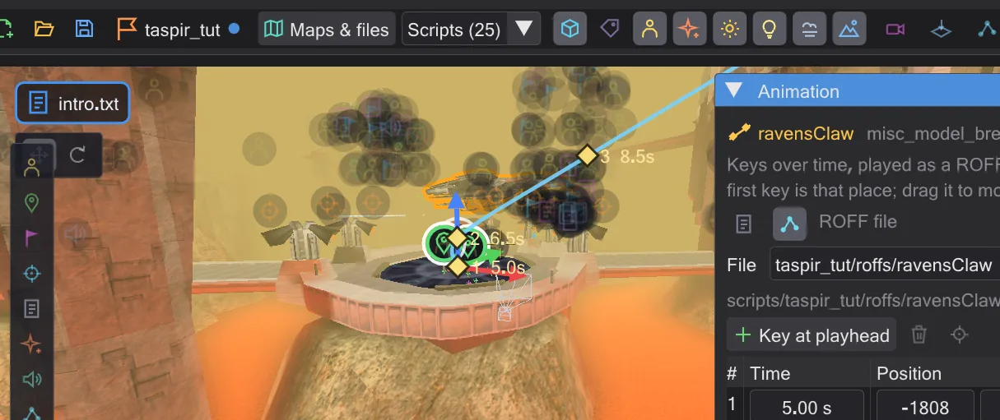
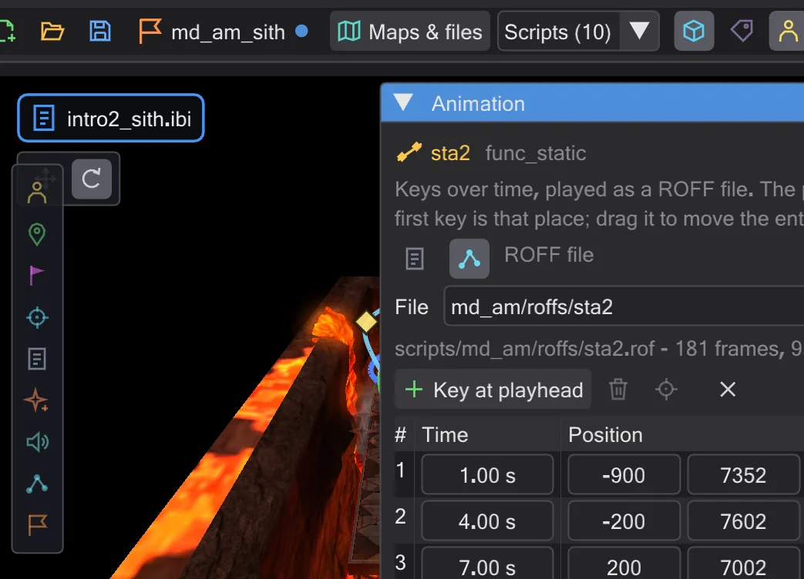
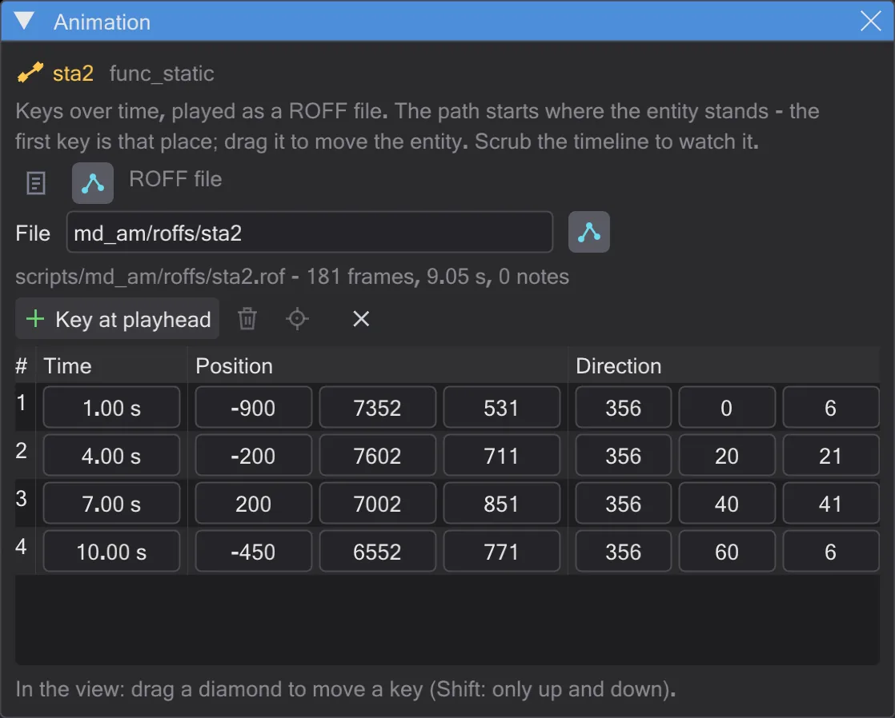

A ship flies a ROFF path
A free flight with curves for the ship over the arena - built as a ROFF file, turned with the gizmo, saved for the game.
Steps#
- 1
Select the ship. In
md_am_sithclick the shipsta2on the map. The inspector shows afunc_static.
The ship is selected. - 2
Open the animation as a ROFF. Press Animate in the inspector, set the timeline to 1 s and press ROFF file. The script gets a block with
play ( "PLAY_ROFF", "md_am/roffs/sta2" ); the first key is where the ship stands.
The Animation window in ROFF mode. - 3
Set the next keys. Move the timeline to 4 s, press Key at playhead and drag the new diamond across the arena. Repeat at 7 s and 10 s. With Smooth on, the path becomes one curve through all diamonds.

Four keys, one smooth curve. - 4
Turn the ship. Put the timeline at 7 s, switch the gizmo to Rotate and drag the red ring: the ship banks into the curve. Because the window shows this ship, the gizmo sets the key at 7 s instead of changing the start.

The red ring banks the ship at 7 s. - 5
Watch it. Press the play button (▶). The timeline shows the flight as a band under Movement; drag it to start earlier or later.

The ship in flight. - 6
Save. Ctrl+S writes the script - the first time it asks where; choose the
scriptsfolder of your mod. Next to it, in the same scripts folder,md_am/roffs/sta2.rofis written; the status line names the file. Save mission puts it into the mission's.pk3.
The file name and its length in the window - saving writes the file.


How ROFF files work, and how to edit the ones of the game: Animating movers and ROFF files.